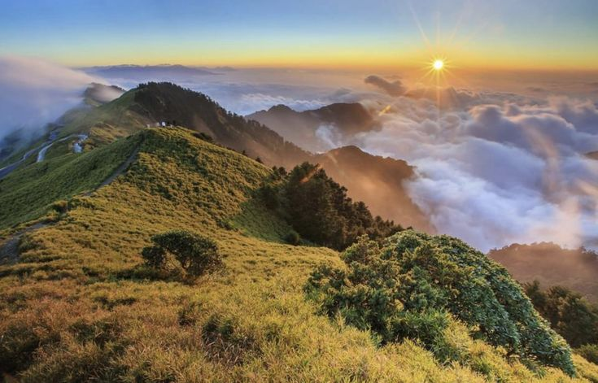

✨ Eksplorasi Keindahan Gunung Merbabu

Gunung Merbabu adalah gunung berapi di Jawa Tengah dengan ketinggian 3.145 mdpl.
Merbabu menawarkan jalur sabana yang luas dan pemandangan sunrise yang memukau.
🔍 Fakta Menarik
- Berada di kawasan Taman Nasional Gunung Merbabu.
- Nama "Merbabu" berarti "Gunung Wanita Tua".
- Tersedia beberapa jalur pendakian menantang dan indah.
🥾 Jalur Pendakian Populer
- Selo – Jalur populer dan ramah pemula.
- Wekas – Melalui hutan lebat dan sejuk.
- Suwanting – Tantangan bagi pendaki berpengalaman.
- Thekelan – Jalur alami, sunyi, dan eksotis.
Gunakan sistem booking online untuk pendakian yang lebih tertib dan nyaman.